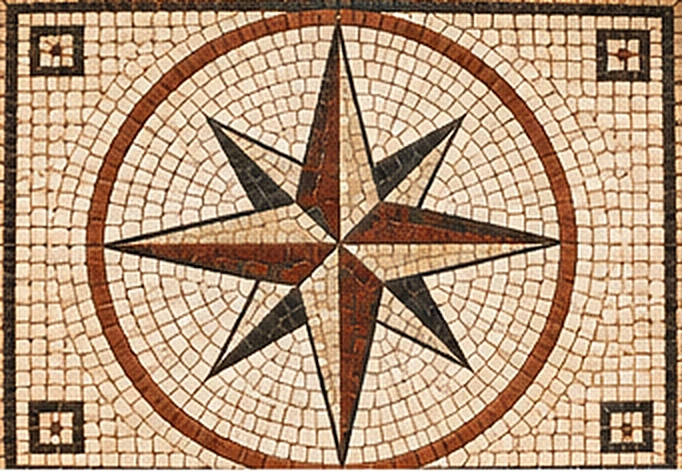
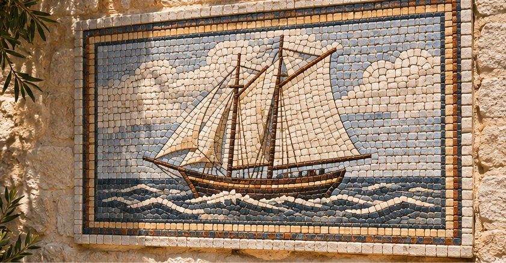
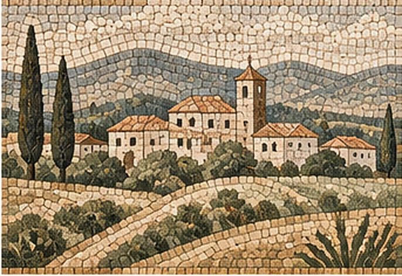
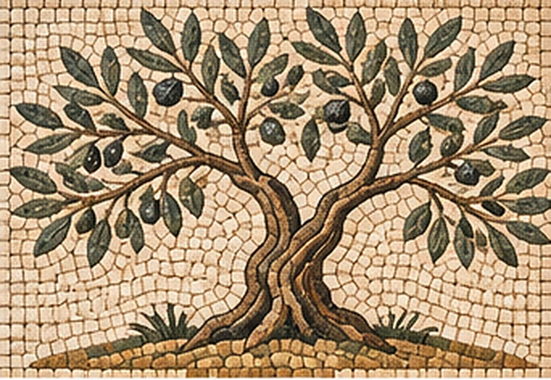
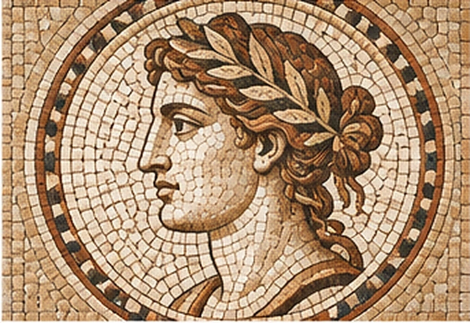

Motivos geométricos
Diseños clásicos y atemporales.

LITOS / MURALES DE TESELAS
Arte en piedra, pieza a pieza.
Composiciones decorativas realizadas con teselas de piedra natural, que combinan tradición, oficio y valor estético. Diseños para jardines, patios, fachadas y espacios interiores, sujetos a la adecuación de los materiales.
Ver modelos
Diseños clásicos y atemporales.

Composiciones figurativas y naturales.

Árboles, flores y motivos mediterráneos.

Arte y simbolismo en piedra.
Imágenes conceptuales de referencia. Los motivos, las piedras disponibles, las dimensiones y los sistemas de instalación deben concretarse con el taller. No son fotografías de obras ejecutadas por LITOS. Sin precio publicado.
DEL DISEÑO A LA PIEDRA
El motivo se adapta a la pared y a la distancia desde la que se contemplará.
Selección de tonos, texturas y piedras aptas para el emplazamiento.
Estudio del formato de cada tesela, las juntas y las piezas de contorno.
Definición de soporte, peso, anclaje y condiciones de conservación.
El comportamiento a la intemperie depende de la piedra, el soporte y la instalación. No se garantizan precios, medidas ni prestaciones sin una validación técnica.